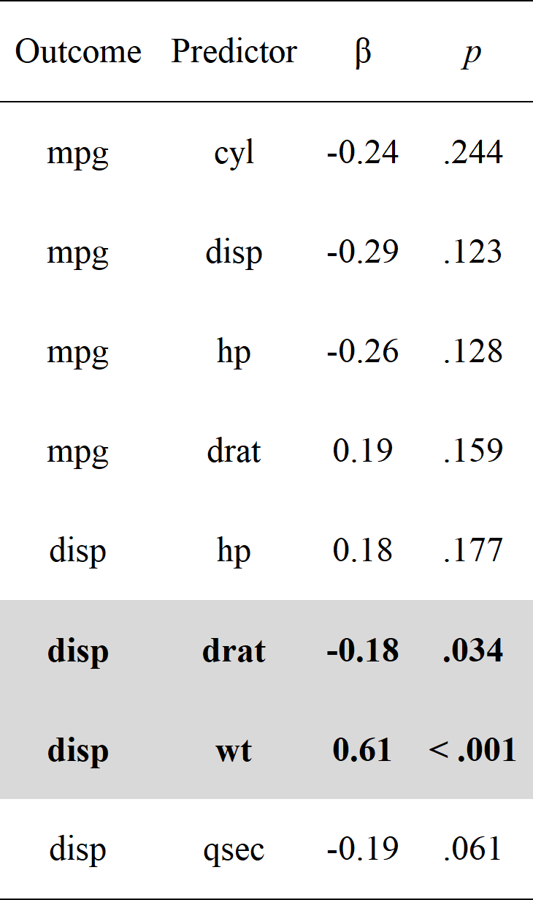
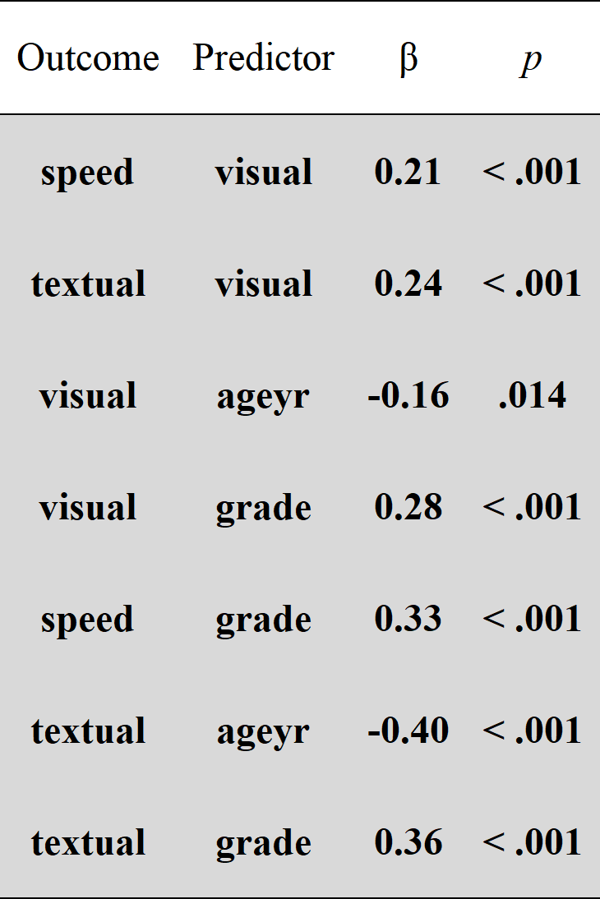
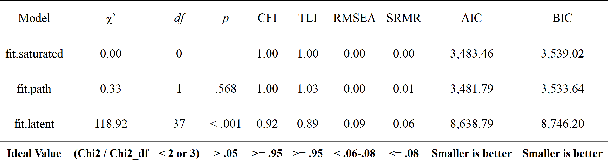

Affords an alternative, vector-based syntax to lavaan, as well as other convenience functions such as naming paths and defining indirect links automatically. Also offers convenience formatting optimized for a publication and script sharing workflow.
Installation
You can install the development version of lavaanExtra like so:
install.packages("lavaanExtra", repos = c(
rempsyc = "https://rempsyc.r-universe.dev",
CRAN = "https://cloud.r-project.org"))Regression example
# Define our regression terms
(regression <- list(mpg = names(mtcars)[-1],
disp = names(mtcars)[-c(1:3)]))
#> $mpg
#> [1] "cyl" "disp" "hp" "drat" "wt" "qsec" "vs" "am" "gear" "carb"
#>
#> $disp
#> [1] "hp" "drat" "wt" "qsec" "vs" "am" "gear" "carb"
# Load library, write the model, and check it
library(lavaanExtra)
mtcars.model <- write_lavaan(regression = regression)
cat(mtcars.model)
#> ##################################################
#> # [---------Regressions (Direct effects)---------]
#>
#> mpg ~ cyl + disp + hp + drat + wt + qsec + vs + am + gear + carb
#> disp ~ hp + drat + wt + qsec + vs + am + gear + carb
# Fit the model with `lavaan`
library(lavaan)
fit <- lavaan(mtcars.model, data = mtcars, auto.var = TRUE)
# Get regression parameters only
lavaan_reg(fit)
#> Outcome Predictor B p
#> 1 mpg cyl -0.111 0.891
#> 2 mpg disp 0.013 0.339
#> 3 mpg hp -0.021 0.241
#> 4 mpg drat 0.787 0.550
#> 5 mpg wt -3.715 0.015
#> 6 mpg qsec 0.821 0.177
#> 7 mpg vs 0.318 0.854
#> 8 mpg am 2.520 0.132
#> 9 mpg gear 0.655 0.587
#> 10 mpg carb -0.199 0.761
#> 11 disp hp 0.753 0.000
#> 12 disp drat 4.189 0.795
#> 13 disp wt 84.409 0.000
#> 14 disp qsec -15.794 0.018
#> 15 disp vs -23.533 0.240
#> 16 disp am -11.946 0.556
#> 17 disp gear -1.376 0.924
#> 18 disp carb -30.657 0.000
# We can get it prettier with `rempsyc::nice_table`
library(rempsyc)
#> Tutorials: https://remi-theriault.com/tutorials
#> Bug report, support, special request: https://github.com/rempsyc/rempsyc/issues
#>
#> Suggested APA citation: Thériault, R. (2022). rempsyc: Convenience functions for psychology (R package version 0.0.5.8) [Computer software]. https://rempsyc.remi-theriault.com
nice_table(lavaan_reg(fit), highlight = TRUE)
SEM example
Here is a structural equation model example. We start with a path analysis first.
Saturated model
The first step is usually to look at the saturated lavaan model.
# Calculate scale averages
data <- HolzingerSwineford1939
data$visual <- rowMeans(data[paste0("x", 1:3)])
data$textual <- rowMeans(data[paste0("x", 4:6)])
data$speed <- rowMeans(data[paste0("x", 7:9)])
# Check what we have
head(data)
#> id sex ageyr agemo school grade x1 x2 x3 x4 x5 x6
#> 1 1 1 13 1 Pasteur 7 3.333333 7.75 0.375 2.333333 5.75 1.2857143
#> 2 2 2 13 7 Pasteur 7 5.333333 5.25 2.125 1.666667 3.00 1.2857143
#> 3 3 2 13 1 Pasteur 7 4.500000 5.25 1.875 1.000000 1.75 0.4285714
#> 4 4 1 13 2 Pasteur 7 5.333333 7.75 3.000 2.666667 4.50 2.4285714
#> 5 5 2 12 2 Pasteur 7 4.833333 4.75 0.875 2.666667 4.00 2.5714286
#> 6 6 2 14 1 Pasteur 7 5.333333 5.00 2.250 1.000000 3.00 0.8571429
#> x7 x8 x9 visual textual speed
#> 1 3.391304 5.75 6.361111 3.819444 3.123016 5.167472
#> 2 3.782609 6.25 7.916667 4.236111 1.984127 5.983092
#> 3 3.260870 3.90 4.416667 3.875000 1.059524 3.859179
#> 4 3.000000 5.30 4.861111 5.361111 3.198413 4.387037
#> 5 3.695652 6.30 5.916667 3.486111 3.079365 5.304106
#> 6 4.347826 6.65 7.500000 4.194444 1.619048 6.165942
# Define our variables
(m <- "visual")
#> [1] "visual"
(IV <- c("ageyr", "grade"))
#> [1] "ageyr" "grade"
#(DV <- c("speed", "textual"))
# Define our lavaan lists
(mediation <- list(speed = m,
textual = m,
visual = IV))
#> $speed
#> [1] "visual"
#>
#> $textual
#> [1] "visual"
#>
#> $visual
#> [1] "ageyr" "grade"
(regression <- list(speed = IV,
textual = IV))
#> $speed
#> [1] "ageyr" "grade"
#>
#> $textual
#> [1] "ageyr" "grade"
(covariance <- list(speed = "textual",
ageyr = "grade"))
#> $speed
#> [1] "textual"
#>
#> $ageyr
#> [1] "grade"
# Write the model, and check it
fit.saturated <- write_lavaan(mediation, regression, covariance)
cat(fit.saturated)
#> ##################################################
#> # [-----------Mediations (named paths)-----------]
#>
#> speed ~ visual
#> textual ~ visual
#> visual ~ ageyr + grade
#>
#> ##################################################
#> # [---------Regressions (Direct effects)---------]
#>
#> speed ~ ageyr + grade
#> textual ~ ageyr + grade
#>
#> ##################################################
#> # [------------------Covariances-----------------]
#>
#> speed ~~ textual
#> ageyr ~~ grade
# Fit the model with `lavaan`
fit.saturated <- lavaan(fit.saturated, data = data, auto.var = TRUE)
# Get regression parameters only and make it pretty with `rempsyc::nice_table`
lavaan_reg(fit.saturated) |>
nice_table(highlight = TRUE)
So speed as predicted by ageyr isn’t significant. We could remove that path from the model it if we are trying to make a more parsimonious model. Let’s make the non-saturated path analysis model next.
Path analysis model
Because we use lavaanExtra, we don’t have to redefine the entire model: simply what we want to update. In this case, the regressions. However, we also want to specify and test our indirect effects (mediation). For this, we have to obtain the path names by setting label = TRUE. This will allow us to define our indirect effects and feed them back to write_lavaan.
(regression <- list(speed = "grade",
textual = IV))
#> $speed
#> [1] "grade"
#>
#> $textual
#> [1] "ageyr" "grade"
# We check that we have removed "ageyr" correctly from "speed". OK.
# We can run the model again. However, we set `label = TRUE` to get the path names
model.path <- write_lavaan(mediation, regression, covariance, label = TRUE)
cat(model.path)
#> ##################################################
#> # [-----------Mediations (named paths)-----------]
#>
#> speed ~ speed_a*visual
#> textual ~ textual_a*visual
#> visual ~ visual_a*ageyr + visual_b*grade
#>
#> ##################################################
#> # [---------Regressions (Direct effects)---------]
#>
#> speed ~ grade
#> textual ~ ageyr + grade
#>
#> ##################################################
#> # [------------------Covariances-----------------]
#>
#> speed ~~ textual
#> ageyr ~~ grade
# We check that we have removed "ageyr" correctly from "speed" in the
# regression section. OK.Here, if we check the mediation section of the model, we see that it has been “augmented” with the path names. Those are speed_a, textual_a, visual_a, and visual_b. The logic for the determination of the path names is predictable: it is always the dependent variable (on the left) followed by letters, which represent the number of the explanatory variable (on the right).
(indirect <- list(age_visual_speed = c("speed_a", "visual_a"),
grade_visual_textual = c("textual_a", "visual_b")))
#> $age_visual_speed
#> [1] "speed_a" "visual_a"
#>
#> $grade_visual_textual
#> [1] "textual_a" "visual_b"
# We run the model again, with the indirect effects
model.path <- write_lavaan(mediation, regression, covariance, indirect, label = TRUE)
cat(model.path)
#> ##################################################
#> # [-----------Mediations (named paths)-----------]
#>
#> speed ~ speed_a*visual
#> textual ~ textual_a*visual
#> visual ~ visual_a*ageyr + visual_b*grade
#>
#> ##################################################
#> # [---------Regressions (Direct effects)---------]
#>
#> speed ~ grade
#> textual ~ ageyr + grade
#>
#> ##################################################
#> # [------------------Covariances-----------------]
#>
#> speed ~~ textual
#> ageyr ~~ grade
#>
#> ##################################################
#> # [--------Mediations (indirect effects)---------]
#>
#> age_visual_speed := speed_a * visual_a
#> grade_visual_textual := textual_a * visual_b
# Fit the model with `lavaan`
fit.path <- lavaan(model.path, data = data, auto.var = TRUE)
# We can get the fit summary if necessary, but the output is a bit long
summary(fit.path)
#> lavaan 0.6-12 ended normally after 21 iterations
#>
#> Estimator ML
#> Optimization method NLMINB
#> Number of model parameters 14
#>
#> Used Total
#> Number of observations 300 301
#>
#> Model Test User Model:
#>
#> Test statistic 0.327
#> Degrees of freedom 1
#> P-value (Chi-square) 0.568
#>
#> Parameter Estimates:
#>
#> Standard errors Standard
#> Information Expected
#> Information saturated (h1) model Structured
#>
#> Regressions:
#> Estimate Std.Err z-value P(>|z|)
#> speed ~
#> visual (spd_) 0.192 0.050 3.862 0.000
#> textual ~
#> visual (txt_) 0.286 0.063 4.519 0.000
#> visual ~
#> ageyr (visl_) -0.134 0.054 -2.470 0.014
#> grade (vsl_b) 0.493 0.114 4.306 0.000
#> speed ~
#> grade 0.533 0.087 6.111 0.000
#> textual ~
#> ageyr -0.410 0.060 -6.851 0.000
#> grade 0.765 0.129 5.926 0.000
#>
#> Covariances:
#> Estimate Std.Err z-value P(>|z|)
#> .speed ~~
#> .textual 0.091 0.040 2.254 0.024
#> ageyr ~~
#> grade 0.268 0.034 7.885 0.000
#>
#> Variances:
#> Estimate Std.Err z-value P(>|z|)
#> .speed 0.546 0.045 12.247 0.000
#> .textual 0.872 0.071 12.247 0.000
#> .visual 0.723 0.059 12.247 0.000
#> ageyr 1.103 0.090 12.247 0.000
#> grade 0.249 0.020 12.247 0.000
#>
#> Defined Parameters:
#> Estimate Std.Err z-value P(>|z|)
#> age_visual_spd -0.026 0.012 -2.081 0.037
#> grade_vsl_txtl 0.141 0.045 3.117 0.002
# Get regression parameters only and make it pretty with `rempsyc::nice_table`
lavaan_reg(fit.path) |>
nice_table(highlight = TRUE)
# We only kept significant regressions. Good (for this demo).
# Get fit indices
nice_fit(fit.path)
#> chi2 df p CFI TLI RMSEA SRMR AIC BIC
#> x 0.327 1 0.568 1 1.028 0 0.007 3481.787 3533.64
# We can get it prettier with `rempsyc::nice_table`
nice_table(nice_fit(fit.path))
# Let's get the indirect effects only
parameterEstimates(fit.path, standardized = TRUE)[which(parameterEstimates(fit.path)$op == ":="),]
#> lhs op rhs label est se
#> 15 age_visual_speed := speed_a*visual_a age_visual_speed -0.026 0.012
#> 16 grade_visual_textual := textual_a*visual_b grade_visual_textual 0.141 0.045
#> z pvalue ci.lower ci.upper std.lv std.all std.nox
#> 15 -2.081 0.037 -0.050 -0.001 -0.026 -0.033 -0.033
#> 16 3.117 0.002 0.052 0.230 0.141 0.066 0.066For reference, this is our model, visually speaking
Latent model
Finally, perhaps we change our mind and decide to run a full SEM instead, with latent variables. Fear not: we don’t have to redo everything again. We can simply define our latent variables and proceed.
(latent <- list(visual = paste0("x", 1:3),
textual = paste0("x", 4:6),
speed = paste0("x", 7:9)))
#> $visual
#> [1] "x1" "x2" "x3"
#>
#> $textual
#> [1] "x4" "x5" "x6"
#>
#> $speed
#> [1] "x7" "x8" "x9"
model.latent <- write_lavaan(mediation, regression, covariance, indirect, latent, label = TRUE)
cat(model.latent)
#> ##################################################
#> # [---------------Latent variables---------------]
#>
#> visual =~ x1 + x2 + x3
#> textual =~ x4 + x5 + x6
#> speed =~ x7 + x8 + x9
#>
#> ##################################################
#> # [-----------Mediations (named paths)-----------]
#>
#> speed ~ speed_a*visual
#> textual ~ textual_a*visual
#> visual ~ visual_a*ageyr + visual_b*grade
#>
#> ##################################################
#> # [---------Regressions (Direct effects)---------]
#>
#> speed ~ grade
#> textual ~ ageyr + grade
#>
#> ##################################################
#> # [------------------Covariances-----------------]
#>
#> speed ~~ textual
#> ageyr ~~ grade
#>
#> ##################################################
#> # [--------Mediations (indirect effects)---------]
#>
#> age_visual_speed := speed_a * visual_a
#> grade_visual_textual := textual_a * visual_b
library(lavaan)
fit.latent <- lavaan(model.latent, data = HolzingerSwineford1939, auto.var = TRUE,
auto.fix.first = TRUE, auto.cov.lv.x = TRUE)
summary(fit.latent, fit.measures = TRUE)
#> lavaan 0.6-12 ended normally after 36 iterations
#>
#> Estimator ML
#> Optimization method NLMINB
#> Number of model parameters 29
#>
#> Used Total
#> Number of observations 300 301
#>
#> Model Test User Model:
#>
#> Test statistic 118.917
#> Degrees of freedom 37
#> P-value (Chi-square) 0.000
#>
#> Model Test Baseline Model:
#>
#> Test statistic 1138.683
#> Degrees of freedom 55
#> P-value 0.000
#>
#> User Model versus Baseline Model:
#>
#> Comparative Fit Index (CFI) 0.924
#> Tucker-Lewis Index (TLI) 0.888
#>
#> Loglikelihood and Information Criteria:
#>
#> Loglikelihood user model (H0) -4290.394
#> Loglikelihood unrestricted model (H1) -4230.936
#>
#> Akaike (AIC) 8638.789
#> Bayesian (BIC) 8746.198
#> Sample-size adjusted Bayesian (BIC) 8654.228
#>
#> Root Mean Square Error of Approximation:
#>
#> RMSEA 0.086
#> 90 Percent confidence interval - lower 0.069
#> 90 Percent confidence interval - upper 0.103
#> P-value RMSEA <= 0.05 0.000
#>
#> Standardized Root Mean Square Residual:
#>
#> SRMR 0.061
#>
#> Parameter Estimates:
#>
#> Standard errors Standard
#> Information Expected
#> Information saturated (h1) model Structured
#>
#> Latent Variables:
#> Estimate Std.Err z-value P(>|z|)
#> visual =~
#> x1 1.000
#> x2 0.553 0.100 5.530 0.000
#> x3 0.722 0.110 6.574 0.000
#> textual =~
#> x4 1.000
#> x5 1.110 0.064 17.376 0.000
#> x6 0.912 0.054 16.774 0.000
#> speed =~
#> x7 1.000
#> x8 1.120 0.143 7.843 0.000
#> x9 0.947 0.126 7.538 0.000
#>
#> Regressions:
#> Estimate Std.Err z-value P(>|z|)
#> speed ~
#> visual (spd_) 0.255 0.066 3.843 0.000
#> textual ~
#> visual (txt_) 0.398 0.087 4.579 0.000
#> visual ~
#> ageyr (visl_) -0.177 0.068 -2.611 0.009
#> grade (vsl_b) 0.618 0.145 4.273 0.000
#> speed ~
#> grade 0.462 0.096 4.824 0.000
#> textual ~
#> ageyr -0.378 0.062 -6.141 0.000
#> grade 0.659 0.135 4.876 0.000
#>
#> Covariances:
#> Estimate Std.Err z-value P(>|z|)
#> .textual ~~
#> .speed 0.047 0.039 1.201 0.230
#> ageyr ~~
#> grade 0.268 0.034 7.885 0.000
#>
#> Variances:
#> Estimate Std.Err z-value P(>|z|)
#> .x1 0.538 0.117 4.606 0.000
#> .x2 1.135 0.102 11.102 0.000
#> .x3 0.846 0.091 9.256 0.000
#> .x4 0.362 0.047 7.775 0.000
#> .x5 0.438 0.057 7.692 0.000
#> .x6 0.373 0.043 8.668 0.000
#> .x7 0.744 0.079 9.457 0.000
#> .x8 0.462 0.069 6.692 0.000
#> .x9 0.621 0.067 9.229 0.000
#> ageyr 1.103 0.090 12.247 0.000
#> grade 0.249 0.020 12.247 0.000
#> .visual 0.752 0.140 5.357 0.000
#> .textual 0.668 0.083 8.045 0.000
#> .speed 0.312 0.067 4.622 0.000
#>
#> Defined Parameters:
#> Estimate Std.Err z-value P(>|z|)
#> age_visual_spd -0.045 0.020 -2.228 0.026
#> grade_vsl_txtl 0.246 0.075 3.256 0.001Compare fit of all models
Finally, we can compare our fits by a wrapper around nice_fit that also gives optional reference values.
# Default output
compare_fit(fit.saturated, fit.path, fit.latent)
#> Model chi2 df p CFI TLI RMSEA SRMR AIC BIC
#> 1 fit.saturated 0.000 0 NA 1.000 1.000 0.000 0.000 3483.460 3539.017
#> 2 fit.path 0.327 1 0.568 1.000 1.028 0.000 0.007 3481.787 3533.640
#> 3 fit.latent 118.917 37 0.000 0.924 0.888 0.086 0.061 8638.789 8746.198
# With `nice_table = TRUE`
compare_fit(fit.saturated, fit.path, fit.latent, nice_table = TRUE)